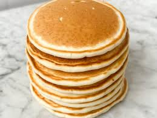

🍕 ⋆ 🍝 🎀 Panqueques 🎀 🍝 ⋆ 🍕
Ingredientes:
- pisca de mantequilla
- polvo de hornear
- 2 huevos
- arina
- esencia de vainilla
- leche
- azucar
Preparación:
- en un envase mescla la leche y huevo junto a la escencia de vainilla
- hechar la arina y mezclar todo
- hechar el polvo de hornear y terminar de mezcal(entre mas polvo de hornear le heches se pone mas esponjoso, como maximo 2 cucharadas y media de polvo de hornear)
- al final hechale el azucar al gusto y prueba el que no se pase de dulce
- espera que el sarten caliente un poco a fuego muy bajo
- pon una pisca de mantequilla en el sarten
- al derretirse hecha la mezcla con cuidado y espera a que se dore a fuego muy bajo
- recuerda fijarte bien para darle la vuelta